Um ecossistema financeiro descentralizado vai permitir um acesso direto e mais justo aos recursos disponíveis no país, combatendo a corrupção enraizada.
O Brasil é uma nação em desenvolvimento rica em recursos, com potencial reprimido pela corrupção política e pela burocracia. A história cultural da economia brasileira preparou o leigo para negócios criptonários e comércio descentralizado. Existe pouca confiança nos detentores do setor financeiro e grandes barreiras à entrada de empreendedores por meio de sistemas arcaicos de organização.

O Brasil é perfeitamente preparado para liderar a maturidade do comércio em negócios habilitados para a web3 e para a blockchain, permitindo transferência direta de valor entre indivíduos e organizações, sem a necessidade de um custo intermediário.
A web3 é uma oportunidade imperdível para PMEs e empreendedores tirarem proveito das mudanças de cenário no comércio por meio da tokenização.
COMO?
WEB3_
Através da remoção das barreiras de entrada e melhora da experiência do usuário, nós podemos permitir que as PMEs e os empreendedores brasileiros encontrem a liberdade para se conectar com seus clientes e fornecedores de forma direta, simplificando o processo de negócios e permitindo maior responsabilidade para reduzir a corrupção.
Isso, por sua vez, vai permitir um acesso aos recursos mais justo e direto para o leigo, reduzindo seu custo de vida e melhorando sua qualidade de vida.
PRODUTOS
Devido à natureza dos negócios e da tecnologia moderna, os produtos e serviços oferecidos pelo Viralata Finance estão em um infinito estado de desenvolvimento. Nós não vemos uma data de conclusão, e os lançamentos são pequenos e incrementais.